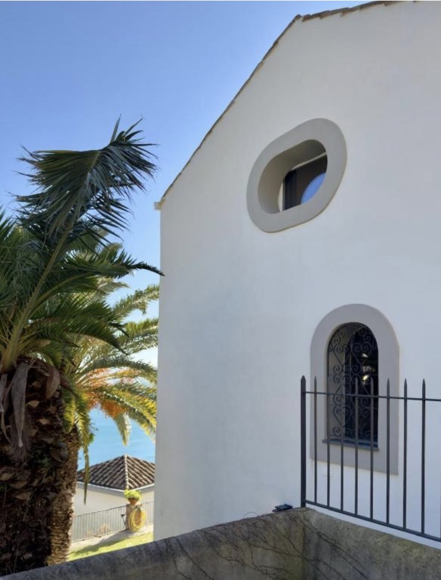
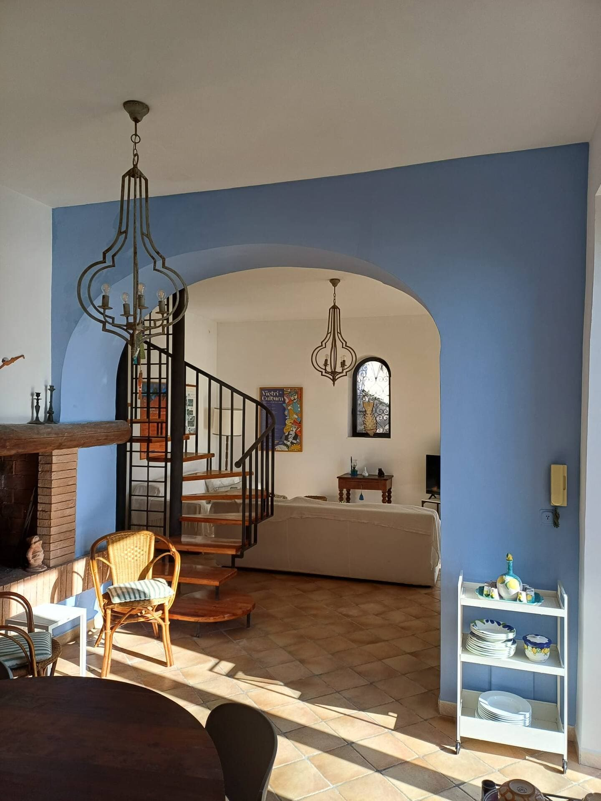
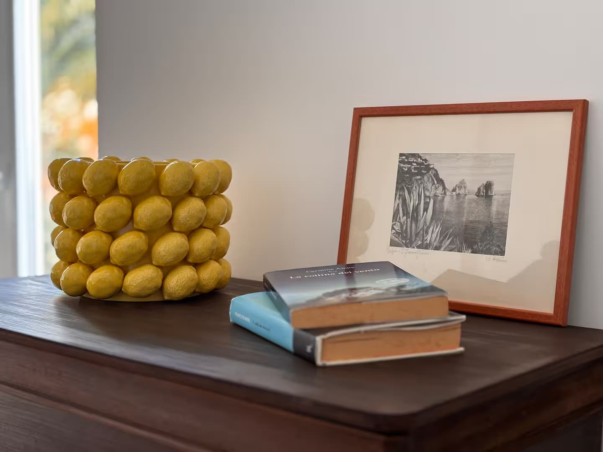
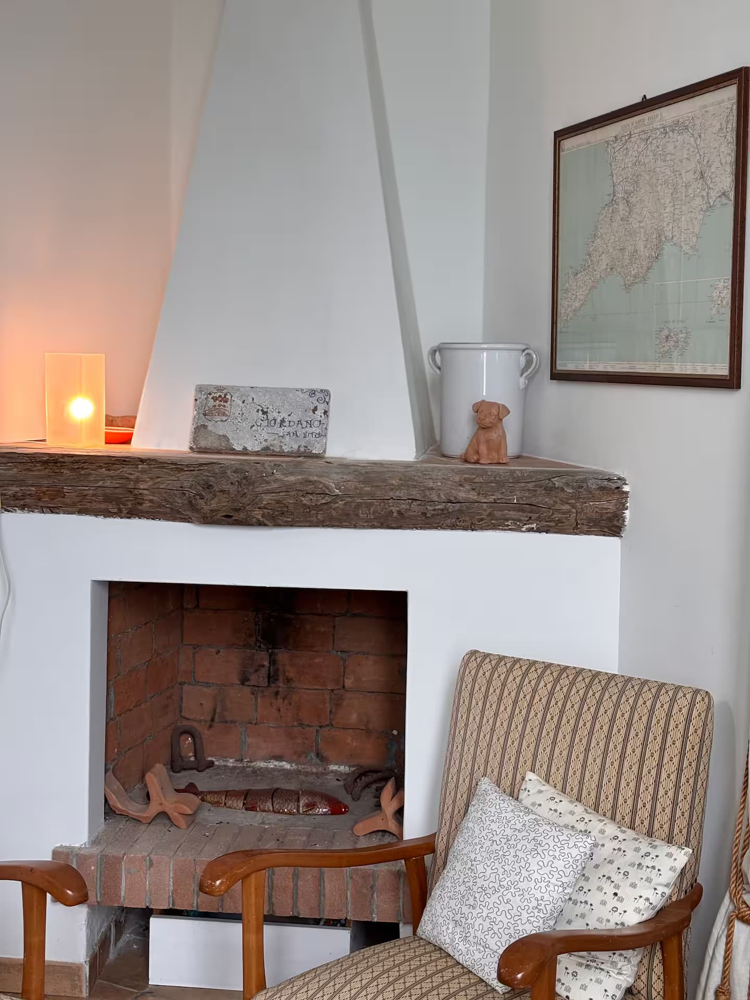
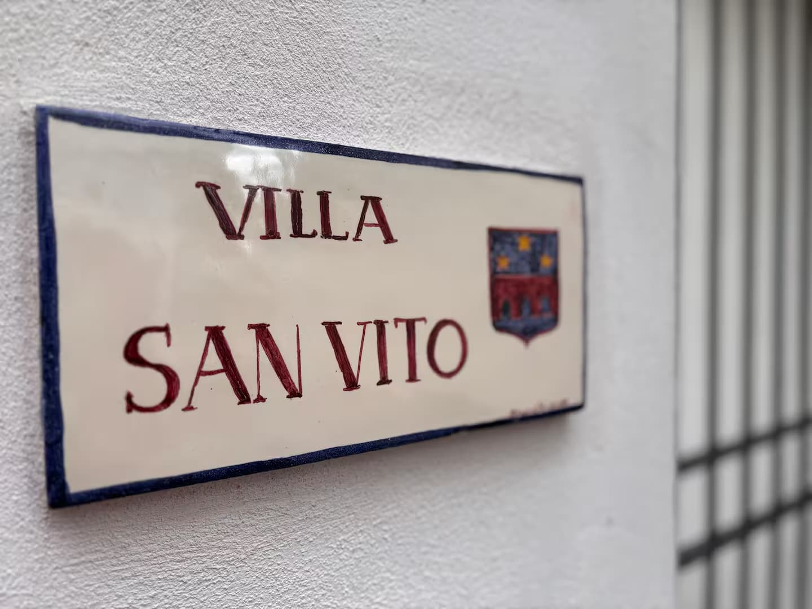
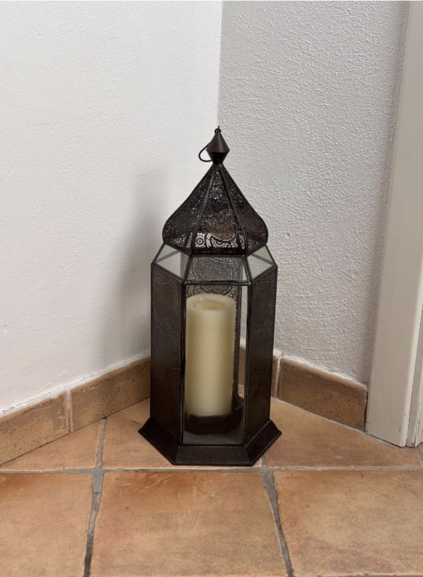
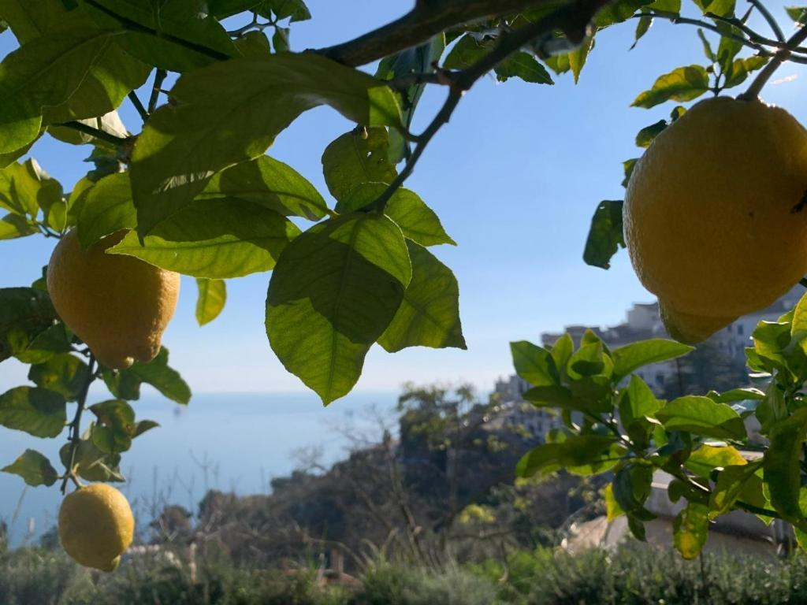
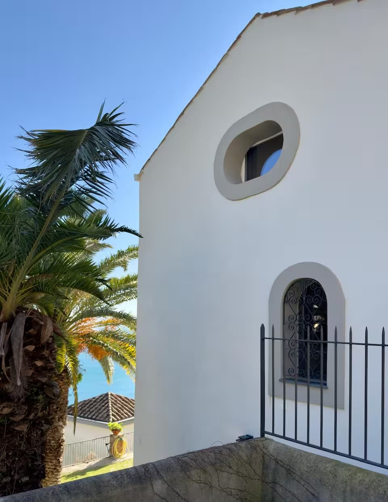
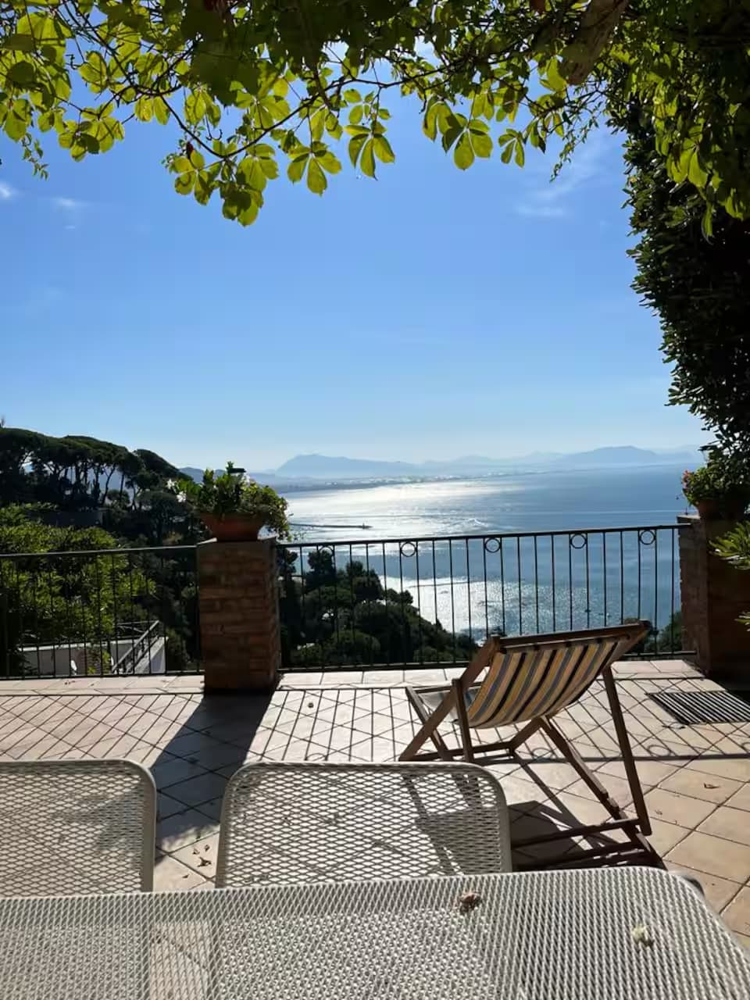

Raito, Costiera Amalfitana
Villa San Vito
La villa si trova in una posizione privilegiata tra Vietri sul Mare e Cetara, in una zona tranquilla da cui la Costiera Amalfitana comincia ad aprirsi verso il Golfo di Salerno.
Da qui si raggiungono facilmente Vietri, Salerno, Amalfi, Ravello e Positano lungo la splendida strada costiera, oppure anche via mare grazie ai numerosi traghetti e aliscafi veloci, per poi rientrare comodamente, a fine pomeriggio, nella calma del borgo.







Chi siamo
Siamo una famiglia profondamente legata alla Costiera Amalfitana e, spinti da questa grande passione per il nostro territorio, ci dedichiamo con gioia all'accoglienza. Il nostro desiderio più grande è aprire la porta di casa per condividere uno dei luoghi più belli del mondo, offrendo un'oasi di pace, calore e autentico relax.
ContattaciBenvenuti a Villa San Vito
Situata a Raito, uno dei piccoli borghi della Costiera Amalfitana, Villa San Vito domina il Golfo di Salerno da una posizione tranquilla, sospesa tra un grande giardino e terrazze di limoni.
A. Storia
Un borgo sospeso tra montagna e mare
Raito conserva una memoria antica di luce e silenzio. Dalla roccia della montagna al Golfo di Salerno, il paesaggio dà alla casa il suo carattere più intimo: pietra, terrazze, aria di mare e una calma lenta.
Villa San Vito appartiene a questa storia. La sua anima ottocentesca dialoga con l'architettura locale, con ambienti freschi, passaggi esterni e viste che raccontano la vita sopra Vietri sul Mare.

B. Villa
Il fascino di una casa storica, da vivere e respirare
Chi sceglie Villa San Vito non cerca il ritmo frenetico di un hotel, ma l'abbraccio di una casa privata. Troverete una casa pensata per rigenerarvi e recuperare il vostro tempo: il caffè del mattino in terrazza con vista sul mare, la frescura del pomeriggio all'ombra del giardino, il silenzio delle stanze e lo sguardo che, inevitabilmente, si perde nell'azzurro del mare.

C. Camere
Tre camere, un solo ritmo di quiete
La zona notte è presentata in modo generale e accogliente, senza nomi di singole camere né formule che possano far pensare a prenotazioni separate. È uno spazio pensato per il riposo, il silenzio e la freschezza dopo le giornate sulla costa.
D. Esterni
La villa succede anche fuori
Terrazze, ombra, foglie e una tavola che invita a restare più del previsto. Il giardino non è un dettaglio: è parte del modo di abitare la casa.
Gli esterni sono il luogo in cui la giornata rallenta: colazione al sole, pomeriggi sotto gli alberi, sera con le luci del Golfo in lontananza.

E. Posizione
Raito, sopra Vietri sul Mare
Raito, Vietri sul Mare, Campania, Italia

Animali ammessi
Animali ammessi
Siamo felici di accogliere i vostri animali domestici, sia di piccola che di media taglia. Per garantire il comfort e la tranquillità di tutti i nostri ospiti, vi chiediamo di informarci della loro presenza al momento della prenotazione e di assicurarvi che siano abituati alla convivenza e rispettino la pace e la quiete della proprietà.
F. Prenota
Prenotazioni tramite piattaforme esterne
Villa San Vito non gestisce prenotazioni dirette dal sito. Disponibilità , condizioni e pagamenti sono gestiti sulle piattaforme esterne.